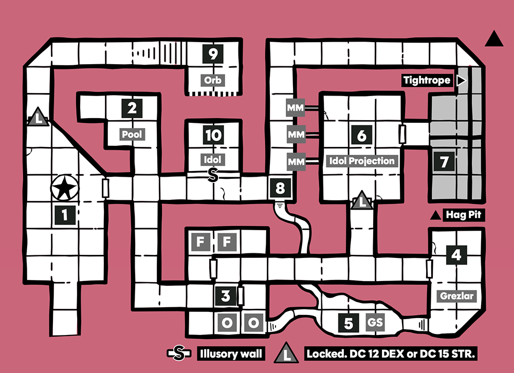

Danger Level. Unsafe. (3rds)
Light. Pitch black.
Random Encounters
| d4 | details |
|---|---|
| 1 | 1d4 Leech Cultists carrying a prisoner toward the lower chambers |
| 2 | 1d6 blood-drained corpses crawling through the roots, searching for warmth |
| 3 | 1d4 giant leeches drop from the ceiling and attack the nearest living creature |
| 4 | 1d4 cultists return from the river carrying buckets of Heartblood. They are suspicious of strangers |

OTHER INFO
An abandoned watchkeep stands among the pines, overlooking a narrow stretch of the Heartblood River. Level 1-2 adventure.
Premise.
The Cult of the Leech has occupied the lower chambers of the old watchkeep, where they have discovered an ancient stone vessel capable of drawing blood from the river itself.
The cult's leader, once an orc woodsman named Hadrik, has become bloated and unnaturally resilient from drinking Heartblood. His followers kidnap travellers and bleed them into the river, believing their sacrifices will weaken the seals beneath the Sanguine Sepulcher.
Recently, something has gone wrong. The keep's inhabitants are changing, the roots have broken through the stonework, the dead have begun moving and the river is seeping in. The cult is still conducting its rites, but not everyone inside is willing to die for Aethelgard. Aethelgard remains an unseen presence: he appears only through his symbols, instructions, and the consequences of his influence.
Getting There.
From Frostholm. A woodsman has returned from the Rotbark with rust-red water pouring from his boots. He claims to have escaped a cultist encampment where several missing travellers were being held.
From the forest. A narrow trail follows the Heartblood River. The trees grow increasingly pale and twisted near an old stone watchkeep. Red water trickles from its foundations.
Overview.
Occupants. Cultists, corrupted forest creatures, and things drawn to the Heartblood.
Root Tunnels. Narrow tunnels of roots link Areas 3, 4, and 8 to the Bloodroot Den (Area 5). Crawling down requires going single file. The roots are coated in sticky Heartblood: 1d4 damage if not cleaned off skin in 2 rounds.
What the Cult Believes.
The cult isn't simply worshipping Aethelgard, they believe the blood rites are keeping him alive beneath the forest, and that if they stop the roots will die. They have misunderstood what the seals actually do.
Running the Cult.
Not every cultist is a fanatic. Some are desperate outcasts who drink the water because it keeps them alive. Others are prisoners forced to serve. Give players chances to negotiate, rescue people, and turn cultists against Hadrik. Hadrik fills the active antagonist role and can be bargained with.
The Wider Rotbark.
The maps, ledger, and correspondence point toward the Grey Ring, Red Moss Hollow, the Leech Cult Watchtower, and ultimately the Sanguine Sepulcher.
Treasure and Rewards.
Iron Root Medallion (50 gp). Ancient symbol of the old watchkeep.
Ruby (50 gp). Found in the cult barracks.
Ritual Dagger (150 gp). Gold-plated blade used in blood sacrifices.
Silver Bowl (100 gp). Used to collect blood during rituals.
Black Iron Idol (200 gp). Depicts Aethelgard seated upon a throne of roots.
Cult Ledger. Records the names and locations of kidnapped travellers.